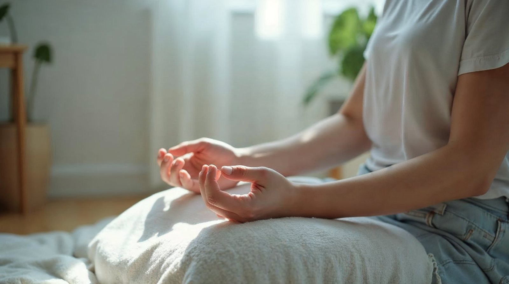
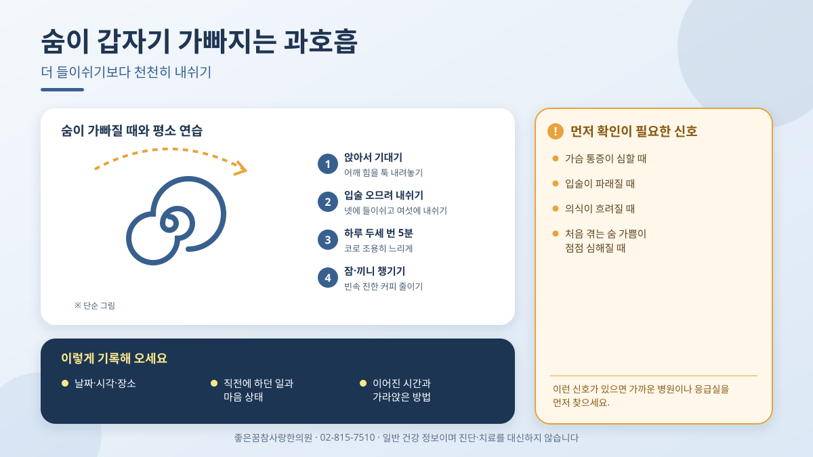

이종호 한의사 감수좋은꿈참사랑한의원 대표원장 (한의사 면허번호 19769)발행 2026-11-26 · 수정 2026-11-26
이 글의 차례
회의실에서 발표 차례를 기다리는데 숨이 점점 빨라집니다. 깊이 들이쉬어도 공기가 폐 끝까지 닿지 않는 것 같아 더 크게, 더 자주 숨을 몰아쉽니다. 그러다 손끝이 찌릿하게 저려 오고, 입 주변이 얼얼해지며 머리가 멍해집니다. 이러다 쓰러지는 건 아닐까 겁이 덜컥 납니다.
진료실에서 이 이야기를 들려주시는 분들은 대개 그 순간을 또렷이 기억하십니다. 숨이 모자라서 더 쉬었는데 왜 더 힘들어졌는지 이해가 안 된다고 하십니다. 그 물음에 답하는 것이 과호흡을 다루는 첫걸음입니다.
과호흡은 말 그대로 숨을 몸이 필요로 하는 것보다 많이, 빠르게 쉬는 상태입니다. 숨이 모자라서 생기는 일처럼 느껴지지만, 실제로는 숨을 너무 많이 내보내서 생기는 불편인 경우가 많습니다. 이 점을 알고 나면 그 순간의 공포가 한결 줄어든다는 분이 많습니다.
오늘은 과호흡이 왜 생기는지, 공황이나 천식과는 어떻게 다른지, 평소 숨 습관은 어떻게 살피는지, 그리고 한의원에서 함께 볼 수 있는 부분을 차근차근 정리해 보겠습니다.
과호흡은 어떤 상태인가요
우리 몸은 숨을 들이쉬어 산소를 받아들이고, 내쉬어 이산화탄소를 내보냅니다. 이산화탄소는 쓸모없는 기체처럼 여겨지지만, 몸속에 알맞은 양이 남아 있어야 혈액의 균형이 유지됩니다. 숨을 너무 많이 쉬면 이 이산화탄소가 지나치게 빠져나갑니다.
그러면 혈액의 균형이 잠시 한쪽으로 기울고, 신경과 근육이 예민해집니다. 손끝과 발끝, 입 주변이 저리고, 손가락이 오그라드는 느낌이 들기도 합니다. 머리로 가는 혈관이 좁아지면서 멍하고 어지러운 느낌도 생깁니다.
여기서 몸은 숨이 모자란다는 신호로 오해합니다. 그래서 더 크게 들이쉬게 되고, 이산화탄소는 더 빠져나가 저림과 어지러움이 심해집니다. 과호흡이 한번 시작되면 스스로 멈추기 어려운 이유가 바로 이 고리입니다.
왜 과호흡이 생길까요
가장 흔한 계기는 긴장과 불안입니다. 발표, 시험, 다툼, 붐비는 공간처럼 마음이 쫓기는 순간에 몸은 위험에 대비하려고 숨을 빠르게 만듭니다. 짧은 순간이라면 자연스러운 반응이지만, 이 반응이 지나치게 커지면 과호흡으로 이어집니다.
평소 숨 습관도 큰 몫을 합니다. 늘 가슴 위쪽으로만 얕게 쉬는 분, 한숨을 자주 쉬는 분, 말을 빠르게 하면서 숨을 몰아쉬는 분은 몸속 이산화탄소가 평소에도 조금 낮은 쪽에 머물러 있을 수 있습니다. 그러면 작은 긴장에도 쉽게 저림과 어지러움이 옵니다.
몸이 지친 상태도 영향을 줍니다. 잠이 모자라고, 끼니를 거르고, 커피로 버티는 날이 이어지면 몸 전체가 예민해집니다. 생리 전이나 감기를 앓고 난 직후처럼 몸이 흔들리는 시기에 과호흡이 잦아진다는 분도 계십니다.
통증이나 열, 다른 몸의 병 때문에 숨이 빨라지는 경우도 있습니다. 그래서 처음 겪으셨거나 모양이 평소와 다르다면, 마음 탓으로만 돌리기 전에 몸의 원인을 먼저 살펴보는 것이 순서입니다.
공황, 천식과는 어떻게 다른가요
공황 발작과의 관계
공황 발작이 올 때 과호흡이 함께 나타나는 경우가 많아 둘은 자주 겹쳐 보입니다. 공황은 갑작스러운 강한 공포가 중심에 있고, 과호흡은 숨을 너무 많이 쉬는 몸의 상태가 중심에 있습니다. 공황 없이 과호흡만 오기도 하고, 과호흡이 공황을 부르기도 합니다.
천식과의 차이
천식은 기관지가 좁아져 숨을 내쉬기가 어렵고, 쌕쌕거리는 소리가 나는 경우가 많습니다. 과호흡은 오히려 숨이 너무 잘 쉬어져서 생기는 불편에 가깝습니다. 숨을 내쉴 때 소리가 나거나 기침이 함께 오래간다면 호흡기 쪽 검사를 먼저 받아 보시길 권합니다.
숨참과의 차이
계단을 오를 때만 숨이 차고 쉬면 금세 가라앉는다면 체력이나 심장, 폐 쪽을 먼저 살핍니다. 가만히 앉아 있을 때, 특히 긴장한 순간에 숨이 몰아쳐 오르고 손발이 저린다면 과호흡 쪽에 더 가깝습니다.
스스로 점검해 보세요
아래 내용 가운데 여러 개가 해당된다면 평소 숨 습관을 함께 살펴볼 필요가 있습니다. 진단을 위한 질문이 아니라, 내 몸의 숨 모양을 알아차리기 위한 질문입니다.
- 하루에 한숨을 자주 쉬는 편인가요?
- 숨을 쉴 때 배보다 가슴과 어깨가 더 움직이나요?
- 말을 하다 보면 숨이 차서 중간에 몰아쉬나요?
- 하품을 하듯 깊은 숨을 쉬어야 개운한가요?
- 긴장하면 손끝이나 입 주변이 저린 적이 있나요?
- 입으로 숨 쉬는 시간이 많은가요?
해당하는 것이 많다고 걱정부터 하실 필요는 없습니다. 숨 습관은 연습으로 다듬을 수 있는 부분이라는 뜻이기도 합니다.
곁에 있는 사람이 도울 때
가족이나 동료가 과호흡을 겪는 모습을 보면 곁에 있는 사람도 당황하기 쉽습니다. 이럴 때는 큰 소리로 "숨 크게 쉬어"라고 하기보다, 낮고 차분한 목소리로 "천천히 내쉬어 보자"고 말해 주세요. 함께 숨을 내쉬며 속도를 보여 주면 따라 하기 쉽습니다.
주변이 붐비고 시끄럽다면 조용한 곳으로 자리를 옮기고, 앉아서 등을 기댈 수 있게 도와주세요. 몸을 꽉 붙잡기보다 곁에 있다는 것만 알려 주는 편이 대개 더 편안합니다. 증상이 가라앉은 뒤에는 무엇이 계기였는지 함께 차분히 돌아보면 좋습니다.
숨 습관은 언제 생길까요
얕은 숨 습관은 대개 오랜 시간에 걸쳐 몸에 붙습니다. 오래 앉아 등을 굽히고 일하면 배가 눌려 숨이 가슴 위로 올라가고, 긴장이 많은 시기를 지나며 어깨로 숨 쉬는 버릇이 자리를 잡습니다. 코가 자주 막혀 입으로 숨 쉬는 분도 숨이 빨라지기 쉽습니다.
그래서 진료실에서는 일하는 자세와 코의 상태, 잠잘 때 입을 벌리고 자는지까지 함께 여쭙니다. 숨은 하루 이만 번 넘게 반복되는 움직임이라, 작은 습관 하나가 쌓이면 몸 전체의 긴장을 바꿉니다. 거꾸로 작은 습관을 다듬으면 그만큼 몸이 편해질 여지도 있습니다.

숨이 가빠지는 순간에 해 볼 수 있는 것
가장 먼저 기억하실 것은 숨을 더 들이쉬지 않는 것입니다. 숨이 모자라다는 느낌이 들어도, 들이쉬기보다 천천히 내쉬는 쪽에 마음을 두세요. 입술을 살짝 오므리고 촛불을 끄지 않을 만큼 길게 내쉬면 숨의 속도가 자연스럽게 느려집니다.
자세도 바꿔 봅니다. 서 있다면 의자에 앉고, 등을 기대고 어깨의 힘을 툭 내려놓습니다. 한 손을 배에 얹고 손이 천천히 오르내리는 것만 느껴 보세요. 숫자를 세며 넷에 들이쉬고 여섯에 내쉬는 정도로 리듬을 잡아도 좋습니다.
예전에는 종이봉투를 입에 대고 숨을 쉬라는 방법이 많이 알려졌습니다. 하지만 원인이 과호흡이 아닌 경우에는 오히려 위험할 수 있어서, 요즘은 권하지 않는 쪽이 많습니다. 봉투보다는 천천히 내쉬는 연습이 더 안전합니다.
저림과 어지러움은 숨이 느려지면 대개 몇 분 안에 서서히 가라앉습니다. 이 사실을 미리 알고 있으면 그 순간의 공포가 줄고, 공포가 줄면 숨도 빨리 제자리를 찾습니다.
숨이 가빠진 뒤에는 이렇게 쉬어 주세요
과호흡이 지나간 뒤에는 몸이 크게 지치고, 손발이 한동안 얼얼하거나 머리가 무겁게 남기도 합니다. 바로 일로 돌아가기보다 미지근한 물을 한 잔 천천히 마시고, 십 분 정도 조용히 앉아 숨을 고르세요. 몸이 놀랐던 만큼 회복할 시간을 주는 것입니다.
그날 저녁에는 일찍 쉬시고, 다음 날 아침에 전날 무엇이 계기였는지 짧게 적어 두세요. 일이 몰렸는지, 잠이 모자랐는지, 끼니를 걸렀는지 적다 보면 반복되는 흐름이 보이기 시작합니다.
일상에서 먼저 해 볼 수 있는 것
과호흡은 그 순간보다 평소의 숨 습관을 다듬는 것이 더 중요합니다. 하루 두세 번, 편한 의자에 기대 앉아 오 분 정도 코로 천천히 숨 쉬는 시간을 가져 보세요. 숨을 깊게 쉬려고 애쓰기보다 조용하고 느리게 쉬는 것이 목표입니다.
한숨을 줄이는 연습도 도움이 됩니다. 한숨이 나오려 할 때 크게 내뱉는 대신 침을 한 번 삼키거나, 코로 짧게 들이쉬고 천천히 내쉬어 보세요. 처음에는 답답하지만 몸이 조금씩 적응합니다.
잠과 식사를 챙기는 것도 기본입니다. 잠이 모자라고 끼니를 거르면 몸이 예민해져 작은 긴장에도 숨이 흔들립니다. 커피는 오후 이른 시간까지만 드시고, 빈속에 진한 커피를 마시는 습관은 줄여 보세요.
가벼운 운동은 숨을 몸에 맞게 쓰는 연습이 됩니다. 걷기처럼 일정한 리듬으로 움직이면서 숨이 고르게 따라오는 경험을 쌓으면, 숨이 흔들리는 순간에도 몸이 덜 놀랍니다. 처음에는 짧게, 숨이 편안한 속도로 시작하세요.
먼저 이렇게 여쭙니다
- 숨이 가빠진 상황과 그때 하던 일은 무엇이었나요?
- 한 번 오면 얼마나 이어지고, 어떻게 가라앉았나요?
- 손발 저림, 어지러움, 가슴 통증이 함께 있었나요?
- 심장이나 폐 검사를 받으신 적이 있나요?
- 요즘 잠, 식사, 커피 습관은 어떠신가요?
- 마음의 부담이 큰 일이 있으신가요?
- 드시는 약이나 영양제가 있나요?
한의원에서 함께 살필 수 있는 경우
몸의 다른 원인을 먼저 확인한 뒤라면 한의원에서도 함께 살필 수 있습니다. 진찰을 마친 뒤 그때의 상태에 맞춰 방법을 고르며, 모든 분께 같은 치료를 드리지는 않습니다.
- 긴장하면 숨이 몰아쳐 오르고 손발이 저리는 일이 반복되는 경우
- 한숨이 잦고 가슴이 답답하며 어깨와 목이 늘 굳어 있는 경우
- 잠을 설치고 쉽게 놀라며 가슴이 두근거리는 경우
- 과호흡이 다시 올까 봐 외출이나 사람 만나기가 꺼려지는 경우
목과 어깨, 가슴의 굳은 근육은 침이나 약침으로 살피고, 숨을 쉬는 모양을 진료실에서 함께 연습합니다. 잠과 긴장이 함께 얽혀 있다면 생활 리듬을 정리하고, 필요하다고 판단되면 한약을 고려합니다. 한약은 지금 드시는 약을 모두 확인한 뒤 신중하게 정합니다.
정신건강의학과에서 처방받은 약을 드시고 있다면 임의로 줄이거나 멈추지 마세요. 한의원 진료는 그 치료와 함께 가는 것입니다. 임신 중이시라면 처음에 먼저 알려 주시고 산부인과 선생님과도 상의해 주세요.
이렇게 기록해 오시면 상담이 쉬워집니다
과호흡은 진료실에서 직접 보기 어려운 경우가 많아서, 기록이 큰 도움이 됩니다. 길게 쓰지 않으셔도 됩니다.
- 숨이 가빠진 날짜, 시각, 장소
- 그 직전에 하던 일과 마음 상태
- 이어진 시간과 가라앉은 방법
- 함께 온 증상(저림, 어지러움, 두근거림)
- 그날의 잠, 끼니, 커피
계절과 생활 리듬도 영향을 줍니다
연말처럼 모임과 마감이 몰리는 시기, 새 학기나 이직처럼 환경이 크게 바뀌는 시기에 과호흡이 잦아진다는 분이 많습니다. 몸은 바쁜 일정을 하나하나 긴장으로 받아들이고, 그 긴장이 숨으로 드러납니다. 이런 시기에는 일정 사이에 숨 고를 틈을 일부러 만들어 두시길 권합니다.
난방이 강한 실내에 오래 있으면 코와 목이 마르고, 답답한 느낌에 숨을 더 크게 쉬게 되기도 합니다. 실내를 너무 덥지 않게 하고, 한두 시간마다 창문을 열어 바람을 바꿔 주세요. 미지근한 물을 자주 마셔 목을 촉촉하게 두는 것도 도움이 됩니다.
다시 올까 봐 두려울 때
과호흡을 한 번 겪으면 또 올까 봐 두려워 그 장소나 상황을 피하게 되기 쉽습니다. 피하는 곳이 늘어날수록 생활은 좁아지고, 걱정은 오히려 커집니다. 두려움이 생활을 줄이고 있다고 느끼신다면 혼자 견디지 마시고 함께 이야기해 주세요.
과호흡은 숨의 속도를 바꾸면 가라앉는다는 것을 몸으로 여러 번 경험하는 것이 중요합니다. 평소에 연습한 숨을 그 순간에 떠올릴 수 있게 되면, 두려움의 크기도 조금씩 작아집니다.
그동안 잘 넘긴 순간들도 함께 적어 두세요. 숨이 빨라지려다 내쉬는 연습으로 가라앉힌 날, 걱정했던 자리에 무사히 다녀온 날이 쌓이면 몸이 스스로를 조금 더 믿게 됩니다.
이런 증상은 먼저 확인이 필요합니다
- 가슴 통증이 심하거나 입술이 파래지고 의식이 흐려지는 경우
- 처음 겪는 숨 가쁨이 쉬어도 가라앉지 않고 점점 심해지는 경우
이런 신호가 있으면 한의원보다 가까운 병원이나 응급실을 먼저 찾으세요.
함께 읽으면 좋은 글
- 갑자기 숨이 막히고 가슴이 뛰는 공황 같은 발작이 올 때는 어떻게 하나요?
- 가슴이 꽉 막힌 듯 답답하고 한숨이 자꾸 나오는 흉민은 어떻게 살피나요?
- 시험이나 발표만 앞두면 손이 떨리고 머리가 하얘지는 수행 불안은 어떻게 살피나요?
- 걱정이 꼬리를 물고 멈추지 않는 범불안(불안장애)은 어떻게 살피나요?
- 불안한 마음과 몸이 긴장한 느낌은 어떻게 나눠서 이야기하나요?

여쭙는 것
- 숨이 가빠진 상황과 그때 하던 일은 무엇이었나요?
- 한 번 오면 얼마나 이어지고, 어떻게 가라앉았나요?
- 손발 저림, 어지러움, 가슴 통증이 함께 있었나요?
생활에서 해 볼 것
- 과호흡은 그 순간보다 평소의 숨 습관을 다듬는 것이 더 중요합니다.
- 하루 두세 번, 편한 의자에 기대 앉아 오 분 정도 코로 천천히 숨 쉬는 시간을 가…
- 숨을 깊게 쉬려고 애쓰기보다 조용하고 느리게 쉬는 것이 목표입니다.
한의원에서 함께 살필 것
- 긴장하면 숨이 몰아쳐 오르고 손발이 저리는 일이 반복되는 경우
- 한숨이 잦고 가슴이 답답하며 어깨와 목이 늘 굳어 있는 경우
- 잠을 설치고 쉽게 놀라며 가슴이 두근거리는 경우
먼저 확인이 필요한 신호
- 가슴 통증이 심하거나 입술이 파래지고 의식이 흐려지는 경우
- 처음 겪는 숨 가쁨이 쉬어도 가라앉지 않고 점점 심해지는 경우
한눈에 보는 표
| 구분 | 핵심 |
|---|---|
| 여쭙는 것 | 숨이 가빠진 상황과 그때 하던 일은 무엇이었나요? 한 번 오면 얼마나 이어지고, 어떻게 가라앉았나요? |
| 한의원에서 함께 살필 것 | 긴장하면 숨이 몰아쳐 오르고 손발이 저리는 일이 반복되는 경우 한숨이 잦고 가슴이 답답하며 어깨와 목이 늘 굳어 있는 경우 |
| 먼저 확인이 필요한 신호 | 가슴 통증이 심하거나 입술이 파래지고 의식이 흐려지는 경우 처음 겪는 숨 가쁨이 쉬어도 가라앉지 않고 점점 심해지는 경우 |
자주 묻는 질문
과호흡으로 쓰러질 수도 있나요?
숨이 빨라지면 어지럽고 멍해질 수 있지만, 대개 숨의 속도가 느려지면 몇 분 안에 서서히 가라앉습니다. 다만 처음 겪으셨거나 가슴 통증이 함께 있다면 몸의 원인을 먼저 확인해 보세요.
종이봉투를 대고 숨 쉬는 방법은 써도 되나요?
원인이 과호흡이 아닐 때는 오히려 위험할 수 있어 요즘은 권하지 않는 편입니다. 입술을 오므리고 천천히 길게 내쉬는 방법이 더 안전합니다.
과호흡과 공황은 같은 건가요?
자주 함께 오지만 같은 것은 아닙니다. 공황은 갑작스러운 강한 공포가 중심이고, 과호흡은 숨을 너무 많이 쉬는 몸의 상태가 중심입니다.
평소 숨 연습은 얼마나 하면 좋나요?
하루 두세 번, 한 번에 오 분 정도 편하게 앉아 코로 천천히 숨 쉬는 것부터 시작해 보세요. 길게 하기보다 매일 이어 가는 것이 중요합니다.
아이도 과호흡이 올 수 있나요?
시험이나 다툼처럼 긴장이 큰 순간에 아이도 숨이 빨라질 수 있습니다. 처음이라면 소아청소년과에서 몸의 원인을 먼저 확인하시고, 평소 긴장과 잠을 함께 살펴 주세요.
좋은꿈참사랑한의원은 재진 때 지난번 이야기부터 이어서 여쭙니다. 진료시간과 예약은 오시는 길에서 확인하세요.
어디서 상담받을 수 있나요?
좋은꿈참사랑한의원은 서울 동작구 만양로2길 2 신성빌딩 3층·5층(서울 동작구 상도동, 7호선 상도역 3번 출구 근처)에 있습니다. 한의사 3명(이종호 대표원장, 조영기 수석진료원장, 정원영 진료원장)이 진료합니다. 진료시간은 평일 09:30~20:00(점심 13:00~14:00), 토·일·공휴일 09:30~15:00이며, 방문 전 전화로 확인을 권합니다. 예약은 네이버 예약, 카카오톡 상담, 전화 02-815-7510로 받습니다.
이 글은 일반적인 건강 정보이며 개인의 진단이나 치료를 대신하지 않습니다. 증상이 있거나 복용 중인 약이 있다면 진료를 통해 확인하세요. 치료 효과는 개인마다 다를 수 있습니다.
작성 기준: 일반적으로 알려져 있는 건강 정보를 참고해 정리했습니다(대표원장 감수). 증상 기록은 1~2주 동안 하루 1회, 비슷한 시간에 적어 오시면 지난 상태와 비교하기 쉽습니다.